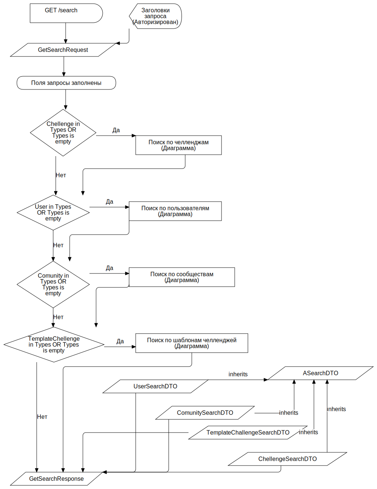

Поиск по сущностям приложения F
FCFlowchart
TAction
::
Use Cases
::
Diagrams
::
PUC: Поиск
::
Поиск по сущностям приложения
::
Поиск по сущностям приложения F
Description
none
Diagrams

Поиск по сущностям приложения FD
Properties
Name
Value
name
Поиск по сущностям приложения F
Owned Elements
Поиск по сущностям приложения FD
GET /search
GetSearchRequest
Chellenge in Types OR Types is empty
User in Types OR Types is empty
Comunity in Types OR Types is empty
TemplateChellenge in Types OR Types is empty
Поиск по челленджам (Диаграмма)
Поиск по пользователям (Диаграмма)
Поиск по сообществам (Диаграмма)
Поиск по шаблонам челленджей (Диаграмма)
GetSearchResponse
UserSearchDTO
ComunitySearchDTO
TemplateChallengeSearchDTO
ChellengeSearchDTO
Поля запросы заполнены
ASearchDTO